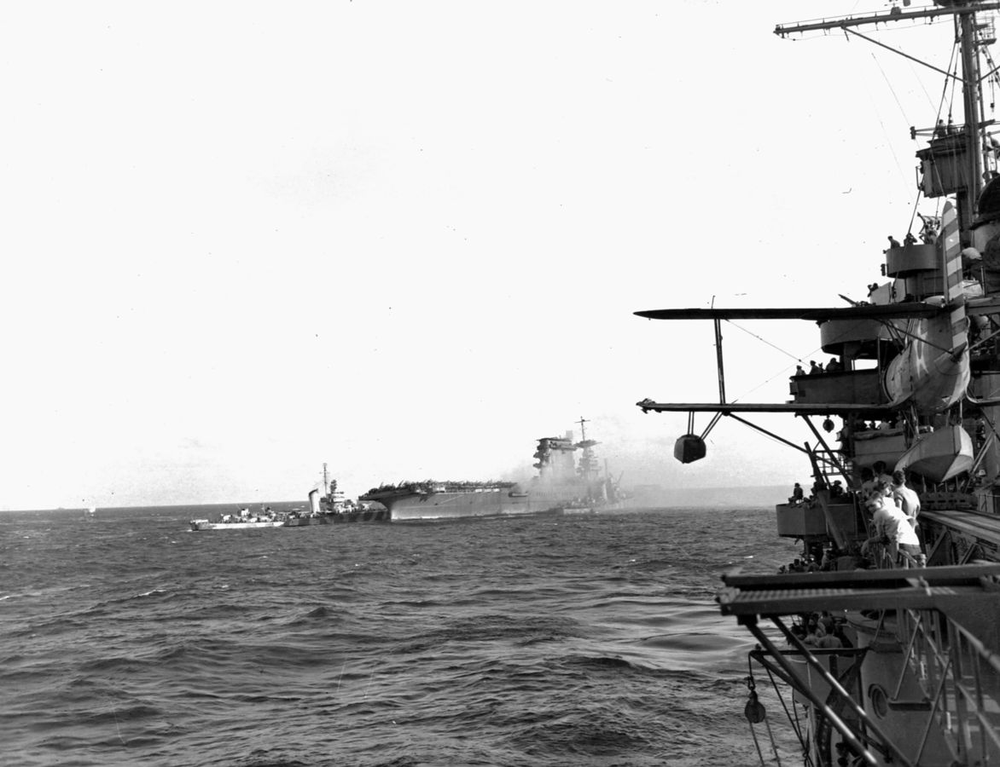
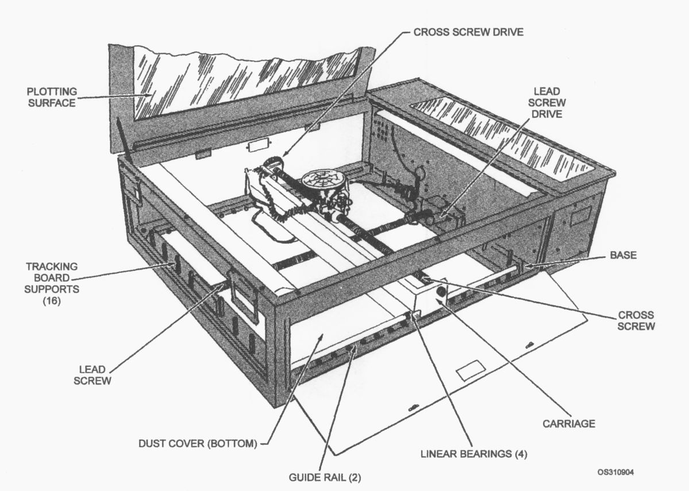
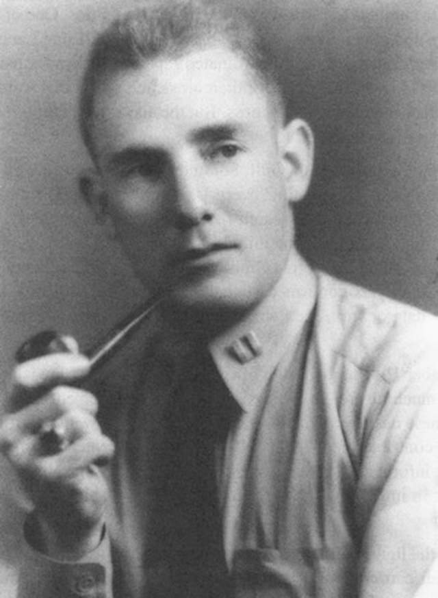

레이더 개발 이야기 (57) - 렉싱턴의 최후 (하)
게시: 2023-11-30T06:30:20+09:00
<이왕 맞을 어뢰> 일본 뇌격기들 18대 중 14대는 렉싱턴을, 4대는 요크타운을 노리고 달려듬. 이 중 3대는 항모 위에서 CAP을 치고 있던 와일드캣들이 격추. 그리고 북동쪽으로 일본기들을 찾아 날아갔다 허탕을 치고 되돌아온 와일드캣들이 추가로 1대를 격추. 이 뇌격기들을 호위하던 제로 전투기들은? 얘들은 항모 주변을 순찰하던 돈틀리스 폭격기들을 격추시키고 있었음. 무려 4대의 돈틀리스들이 격추됨. 이렇게 난전이 벌어지는 가운데 일본 뇌격기들은 침착하게 체계적으로 렉싱턴을 공략. 이들은 각자 맡은 방위각에서 렉싱턴을 노리고 어뢰를 투하. 렉싱턴의 함장 셔먼 대령이 보니 이쪽 어뢰를 피하려 방향을 오른쪽으로 틀면 저쪽에서 헤엄쳐오는 어뢰를 맞겠고, 반대로 왼쪽으로 틀면 이쪽에서 달려오는 어뢰를 맞을 판. 동시에 고공에서는 와일드캣들의 방어를 뚫고 일본 급강하 폭격기들이 내리꽂고 있었음. 결국 렉싱턴은 좌현에 어뢰 한 방을 맞았고, 2분 뒤 다시 한 방을 같은 좌현에 맞았는데, 또 2분이 흐른 뒤에 다시 한 방을 또 좌현에 얻어맞음. 그 난리 속에 셔면 함장에게 전화가 왔는데 받아보니 피해복구 담당관(damage control officer). 그의 요청은 '만약 또 어뢰를 맞아야만 하는 상황이라면, 제발 우현에 맞아달라'는 것. 그러나 다행인지 불행인지 렉싱턴에는 더 이상 어뢰가 꽂히지 않았고, 대신 폭탄이 내리꽂히기 시작. <관제권의 티키타카 패스> 딱 4대의 뇌격기가 달려들었던 요크타운은 운이 더 좋아서, 4발의 어뢰를 모두 피해냄. 그러나 급강하 폭격기를 피하는데는 운이 좋지 않아 500 파운드 폭탄 하나가 갑판을 뚫고 꽂힌 뒤 격납고에서 폭발하여 66명이 사망.

(요크타운을 하마터면 미드웨이에 가지 못하게 만들 뻔 했던 것은 바로 이 Aichi D3A 급강하 폭격기. 보시다시피 랜딩기어를 접어넣지 못하는 낡은 구조라 속도를 못 낼 것 같은데... 실제로 느리긴 했지만 그게 저 고정식 랜딩기어 때문이 아니었음. 반대로 폭격기가 느렸기 때문에 굳이 랜딩기어를 접을 필요가 없었던 것. 그래도 저 느린 폭격기가 WW2에서 연합군 선박을 가장 많이 격침시킨 항공기. 저 조종석에서 튀어나온 긴 튜브 같은 물체는 조종사가 다이빙 폭격을 할 때 사용하는 Type 95 폭탄 조준기.)
이때 렉싱턴에서 전투기를 지휘하던 길 대위는 어뢰를 3방이 맞고 발생한 난리통 속에서 무전기가 말썽을 일으키자, 요크타운에게 전체 전투기 관제권을 넘기는 것이 좋겠다고 생각하던 중. 그러나 그렇게 생각하는 와중에 요크타운에도 폭탄이 꽂혔다는 보고를 듣고는 그냥 무전기 수리 완료를 기다리기로 결심. 어차피 이 때 즈음해서는 렉싱턴과 요크타운은 폭탄과 어뢰를 피하느라 제각각 급격한 기동을 하다 보니 둘 사이의 거리가 크게 벌어짐. 결국 요크타운의 와일드캣들은 무전기가 먹통이 된 렉싱턴의 길 대위 지휘를 기다리지 않고 요크타운의 관제사인 페더슨(Pederson) 중령의 지휘 하로 들어감. 하지만 일이 엉망이 되다보니 이번에는 요크타운의 CXAM 레이더가 먹통이 됨. 페더슨 중령은 이제 장님 신세. 결국 페더슨은 전투기들에게 그저 '함대를 지켜라'(Protect the force)라는 하나마나 한 소리를 끝으로 전투기 관제권을 순양함 USS Chester(9천톤, 32노트)에게 넘김. 체스터는 1929년에 진수된 순양함이었지만 1940년에 CXAM 레이더를 장착했기 때문. 그런데 약 10분 뒤, 요크타운의 CXAM 레이더가 다시 작동을 시작. 다시 요크타운의 페더슨이 관제권을 가져옴. 그런데 몇 분 뒤 이번에는 렉싱턴의 고장났던 무전기가 마침내 수리되어 길 대위가 다시 무선에 참여. 결국 관제권은 다시 길 대위에게 돌아감. 그러나 이랗게 관제권이 오락가락하는 사이 일본기들의 공습은 끝남. <렉싱턴의 최후는 증기로부터> 일본기들이 물러난 뒤에 보니 렉싱턴은 3발의 어뢰와 3발의 폭탄을 얻어맞음. 화재도 발생했으나 곧 진압. 비행갑판에도 파손이 있었으나 공습을 나갔던 편대들이 착함하는 것에는 무리가 없었을 정도. 공습이 끝난 뒤 약 40분 뒤인 12시 20분 렉싱턴은 비교적 빠른 25노트의 속도를 내며 순항 중이었음. 그러나 12시 41분, 함교에 불길한 보고가 날아옴. 부사관 식당과 정비 작업실에 심한 가솔린 냄새가 난다는 것. 이건 매우 위험한 징조. 당시 항모는 중유를 써서 엔진을 돌렸고 중유는 유증기를 거의 내뿜지 않음. 문제는 항공유. 요즘 제트기는 거의 등유 기반의 혼합유를 사용하지만 당시 프로펠러 항공기는 모두 가솔린을 사용. 가솔린은 경유나 등유와는 달리 실온에서도 쉽게 기화되어 유증기를 내뿜기 때문에 그 자체로 매우 위험한 물질. 각각 3차례의 뇌격과 폭격으로 인해 심하게 충격을 받은 렉싱턴의 항공유 탱크가 어디선가 갈라져 샌 모양이고, 거기서 새어나온 가솔린이 기화하여 바람이 잘 통하지 않는 항모 내부에 가득 찼다는 이야기. 영화 같은 것을 보면 불이 붙은 자동차가 폭발하는 장면이 자주 나오는데, 이는 정확하게 말하면 연료 탱크의 가솔린이 폭발하는 것이 아니라 가솔린 증기가 폭발하는 것. 가솔린도 액체이기 때문에 액체 그대로는 불이 붙지 않고 순간적으로 기화면서 그 증기에 불이 붙는 것인데, 자동차 연료 탱크에 불이 붙을 경우 그 열은 일단은 모두 액체 상태의 가솔린을 기화시키는데 다 사용됨. 그러니까 탱크에 가솔린이 한 줌이라도 남아 있으면 폭발하지 않음. 그러나 탱크 속 가솔린이 모두 기화되면, 그 탱크에 가득 찬 가솔린 증기가 이미 섞인 공기와 열에 반응하여 격렬한 폭발을 일으키는 것. 그러니까 진짜 위험한 것은 가솔린이 아니라 가솔린 증기가 공기 중에 일정 농도 이상 가득 찬 것. 당시 렉싱턴의 상태가 바로 그런 상태. 아니나 다를까 12시 47분, 렉싱턴 내부에서 엄청난 내부 폭발이 발생. 이 상태로도 항모를 구하기 위해 승조원들은 몇 시간 동안 사투를 벌였으나 결국 화재 진압에 실패. 17시 10분, 셔면 함장은 승조원들에게 배를 버리도록 명령.

(이 단면도는 HMS Ark Royal. 이 단면도에는 꽤 중요한 영국 해군의 기밀 정보가 있음. 뱃바닥 왼쪽에 보면 h라고 표시된 커다란 하수도관처럼 생긴 구조물이 보이는데, 이것이 함재기 연료인 가솔린 탱크. 당시 다른 나라의 항공모함들은 별 생각없이 항모 엔진용 연료인 중유 탱크처럼 가솔린 탱크도 그냥 선체의 일부 칸에 통합. 그에 비해 영국 해군 항모들은 위 그림처럼 별도의 실린더형 탱크를 만들고 그 실린더 탱크가 들어있는 선체의 칸에 바닷물을 가득 채움. 이는 물을 이용하여 충격을 완화하려는 설계. 이 비밀은 1940년까지 동맹국인 미국에게도 가르쳐 주지 않았음. 이를 몰랐던 미해군과 일본 해군은 항공모함이 피격될 때의 충격으로 가솔린 탱크에 작은 균열이 생기고 거기서 흘러나온 가솔린이 기화되면서 결국 대폭발을 일으키는 사고를 몇 차례 겪음. 렉싱턴도 그 중 하나이고, USS Wasp와 일본 항모 다이호도 다 그런 식으로 치명적이지 않은 피격을 당한 후, 가솔린 유증기에 의한 대폭발을 일으켜 침몰.)

(1941년 5월 8일, 이함 명령이 떨어진 렉싱턴의 모습. 바다로 뛰어든 수병들을 건지느라 구축함이 접근한 것이 보임. 이 사진은 순양함 USS Minneapolis에서 촬영된 것으로서, 오른쪽에 보이는 것은 미네아폴리스에 탑재된 관측 수상기 Curtiss SOC "Seagull". 렉싱턴은 이함 명령이 떨어진 이후에도 침몰하지는 않았고, 적의 손에 함체가 넘어가는 것을 막기 위해 구축함 USS Pelps가 어뢰 5방을 쏘아 자침시킴.) 이때 이함 명령 방송이 나오자, 보조 관제사였던 풋(Stan Foote) 소위는 여태까지 작성해온 항공 상황도(plotting sheet)를 dead reckoning tracer (DRT) 장치에서 떼내어 둘둘 말아 방수 마분지로 만든 서류 보관 튜브에 집어 넣은 뒤, 그걸 들고 바닷물에 뛰어듬. 원래는 그저 본연의 임무에 충실하려 그렇게 한 것인데, 물 위에 떠서 구조를 기다리는 동안 그 서류 튜브의 부력에 매달려 버티는 득을 보았다고. 이 항공 상황도는 나중에 셔면 함장이 산호해 해전 보고서를 작성할 때 큰 도움이 되었으며, 풋은 바닷물에 젖은 흔적이 있는 렉싱턴의 그 항공 상황도를 먼 훗날 대령으로 진급한 이후에도 기념품으로 보관했다고.

(DRT가 어떤 장비인지 잊으신 분들을 위해 다시 한번...)

(1943년 제58 전투기 전대 관제사가 된 Stanwood Foot 대위의 모습) <개선안> 미해군은 레이더를 이용한 전투기 관제가 효율적이지 못했던 것이 렉싱턴의 격침 원인이라고 보고 개선점을 찾으려 노력. 그 결과로 만들어진 보고서에서 다음과 같은 개선안이 권고됨. 다만 이는 레이더에 대한 기술적 개선 요구 사항이 아니라 기존 CXAM 레이더를 좀 더 효율적으로 운용하기 위한 개선안. 레이더 상황실(Radar Plot)이 제대로 운용되기 위해서는 다음과 같은 조건을 갖추어야 함. a. 그 자체가 하나의 독립 부대일 것 b. 전투기 관제사 및 그 휘하 작도사 및 통신사가 효율적으로 활동하기 위해 충분한 넓이의 공간이 주어질 것 c. 외부의 간섭과 소음으로부터 자유롭도록 완전히 고립된 위치일 것 d. 항공기, 그리고 레이더를 갖춘 다른 함정, 그리고 다른 전투기 관제사들과 교신할 수 있도록 자체적인 무전 설비를 갖출 것 e. 신호 함교, 견시, 사령부, 기타 화기 관제소와 연결되는 내부 통신 시설을 갖출 것 f. 항공 관제실(Air Plot)과는 인접한 공간에 위치하여 유사시 통신을 거치지 않고 직접 의사 소통을 할 수 있을 것 g. 하나는 적기 탐색용, 하나는 아군 전투기용으로 2개의 레이더 상황도를 동시에 작도할 수 있도록 충분한 작도 장비를 갖출 것 h. 아군 항공기의 상황과 전반적인 그리고 당장의 전술적 상황을 완전히 파악하고 유지할 수 있도록 충분한 칠판 및 괘도 공간을 갖출 것 요약하면 넓은 방에 작도 장비와 칠판 등을 충분히 주고 통신 시설 강화하라는 것.